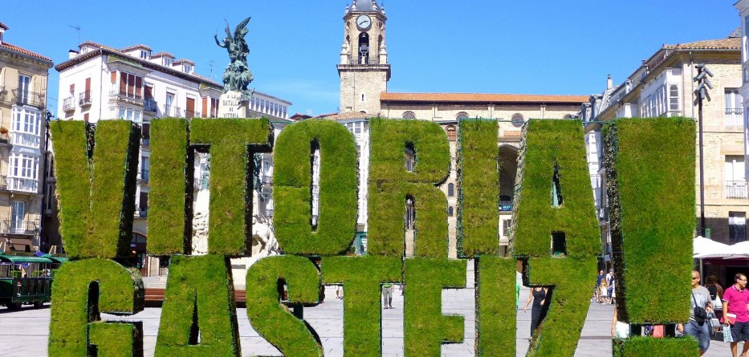

Vitoria , es una ciudad española, capital de Álava, y sede oficial del Parlamento y el Gobierno de la comunidad autónoma del País Vasco.
Enclavada en un cruce de caminos, ha sido a lo largo de la historia un importante punto estratégico tanto en el plano militar como en el comercial y cultural. Ya desde tiempos romanos, en los que la calzada que unía Astorga y Burdeos pasaba por Álava, estas tierras no han dejado de ser un eje de comunicaciones entre la Meseta Central y Europa. Es una ciudad con una intensa historia que se manifiesta en un valioso patrimonio monumental.
En el año 2017 había 246 976 habitantes empadronados en el municipio,13 aunque a fecha de 2018, el Padrón Municipal de Vitoria-Gasteiz confirma la existencia de 250 051 ciudadanos, ocupando así el puesto número diecisiete entre los municipios más poblados de España.
A falta de un reconocimiento legal más explícito, se le considera capital de facto del País Vasco por ser sede de las instituciones comunes. Además, durante el año 2012, Vitoria fue Capital Verde Europea.
